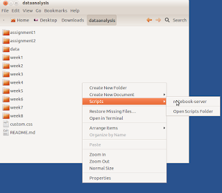

Ubuntu, Nautilus, Dosya / Dizin Uzerinde Islem Yapmak
Ubuntu masaustu dizin gezme programi (explorer) Nautilus'u
kullanirken, eger icinde olunan bir dizin, dosya uzerinde islem
yapmak istersek, bir gorsel kisayol tanimlayabiliriz. Nautilus
yapisina gore $HOME/.gnome2/nautilus-scripts altina atilan her script,
mouse'ta sag tiklama yapilinca menude Scripts altinda cikar. Mesela
notebook-server adinda bir dosya yaratmissak (dosya chmod 755 ile
isler hale getirilmelidir), sag tiklama sonrasi su goruntu cikar,
Script icinde
#!/bin/sh
cd `echo $NAUTILUS_SCRIPT_CURRENT_URI | sed -e 's/file:\/\///g'`
... burada o dizine gore ek islem yap ...
olabilir mesela, sed ile yapilan islem $NAUTILUSSCRIPTCURRENT_URI icinden file:/// ibaresini cikartmak icin. Bu degiskene Nautilus tarafindan otomatik olarak "sag tiklamanin yapildigi dizinin degeri" geciliyor, ama URI oldugu icin icinde file:/// ibaresi var. Biz de o degeri cikartiyoruz. Ardindan istenilen ek islem yapilabilir.

Yukarı